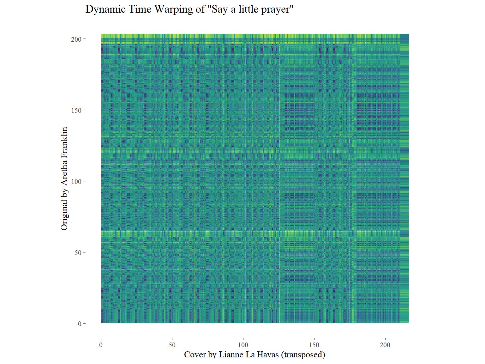

Self-Similarity Matrices for a song of Tom Misch & FKJ

In the Self-Similarity matrix, the song Losing my way from Tom Misch & FKJ is analized. As the timbre SS matrix shows, there are different sections in the song that repeat (WHAT SCHEME IS THIS??). As we can see in the chroma SS matrix, different segments of the song have different pitch characteristics. Some repetitions are high in pitch and others are low (QUESTION AS WELL: what does light and dark mean again?? in this SS matrix??????????).
Corpus
Research Question
How has the soul changed over time? WHY
Motivation
I want to research soul music. I am a musician myself and make soul/jazz/funk/RnB, I am curious how the music I listen and make everyday came to be and differce from earlier Thats why I decided to see how big soul artists through the years compare to eachother. To decide what artists I should include, I made a mix of artists that inspire me, artists that have ment a lot for the genre in the perspective of my guitar teacher (who finished his jazz conservatory master) and artists that made the top according to websites (Sources). These are the artists per generation:
Old Generation: Erykah Badu, Steve Wonder, Bill Withers, Marvin Gaye, Ray charles, Aretha Franklin.
new generation: Tom Misch, Lianne De Havas, FKJ, Joy Crookes, Jorja Smith, Mahalia.
I, and the sources mentioned earlier, think these artists really represent the genre in their time and think it is a good representation of what I want to research. I do think more many names could be added, such as Bobby Hebbs, but I dont think this would be of use.
Hypotheses
I suspect the most difference will be seen in tempo and time, as most songs have been going faster and getting shorter through the years The tracks of all these artists will be compared, I think Bill Withers is the most atypical, because he does a lot of genres besides soul alone (like blues etc.)
Overview of the old generation
Interesting observations
What is interesting to see is that there is one outlier, a song of Erykah Badu. This one is called Hi, which is not a full song, but definitely music, it is in the This is Erykah Badu playlist. This song has no valence and tempo stats, they are set to 0. Another interesting point is that 1 song of Bill Withers,Dont want you on my mind, has a very high tempo (240-250).
Overview of the new generation
Interesting observations
There was also an outlier, like Hi (see old generation overview), in the This is Mahalia playlist, Spotify has taken it out during the time I worked on the project. I Think this is a good decision. since it was a track chat, a discussion about a track she made, and not an actual song. In This is Jorja Smith, there are also some tracks with a popularity of 0, I am not sure how this can be possible since they where listened to. HOW DOES TRACK POPULARITY WORK?
comparing the generations danceability, valence, tempo and energy
As can be seen in the visualization, the old generation generally makes songs that are higher in tempo and valence then the new generation. This was surprising, since this means that the genre does not follow the trend of speeding up its songs. Besides that, the new generation generally makes songs that have higher danceability, but lower energy than the old generation. I think it is interesting that the tempo goes down (as can be seen in the comparison of tempo and valence), but the danceability goes up. This could imply that songs are getting groovier.
chromogram of an interesting soul track

I decided to visualize the song Sunny by Bobby Hebbs. This is not an artist from my corpus, but I think he deserves a honerable mention as he is a big inspiration to me personally and has influenced soul a lot. I really wanted to visualize this song, because it transposes a few times. As seen in the chromogram, the song starts in Emin transposes to Fmin, F#min and ends in Gmin. I think this song is very interesting to see in the chromogram, as you can see the transposing happen. multiple levels of detail for an important outlier (or centre point) in your corpus. IS THIS SOOOOOOOO??????????
comparing an original song from the old generation with a cover of the new generation with Dynamic time wraping

In the dynamic time warping graph, Say a little prayer by Aretha Franklin is compared to the cover of Lianne de Havas. As we can see in the visualization there is no line that shows similarities. This is because Aretha sang it in F#min and Lianne sang it in Emin. Because the keys are not the same, we do not see anything in here. POSSIBLE TRANSPOSING BACK TO COMPARE WITH NEW METHODS NOG OP TERUG KOMEN EN DAT T INTERESITNG IS WITH COVER
Conclusion and Discussion
Conclusion
to be implemented
Discussion
small group of artists, do not necessarily represent whole genre